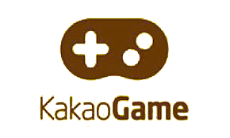

Kakao Games Corp. (Hangul: 카카오게임즈) is a South Korean video game publisher and a subsidiary of Kakao. It specializes in developing and publishing games on PC, mobile, and VR platforms. Each is represented by Namgoong Hoon and Cho Gye-hyun.Originally known as Daum Games before the acquisition of Daum, Kakao Games has expanded from game distribution solely in Korea. Now, Kakao Games distributes its games globally throughout North America, Europe, and other parts of Asia thanks in part to its social aspect with KakaoTalk. Kakao uses the game portal of Daum and social network of KakaoTalk to connect players within their games.